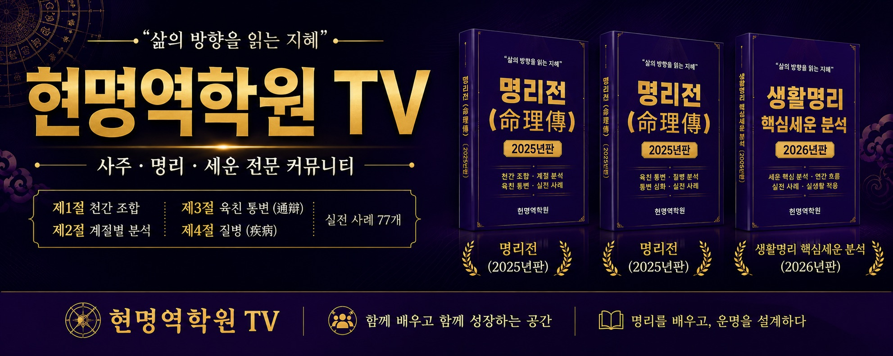
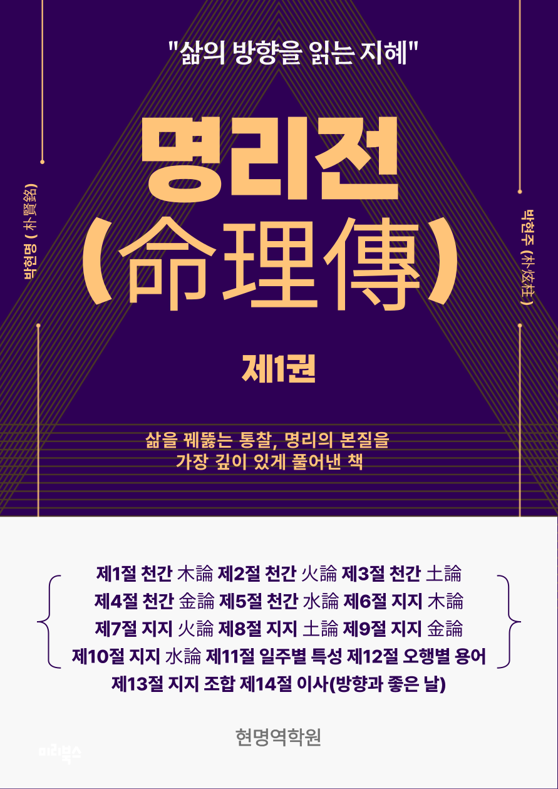
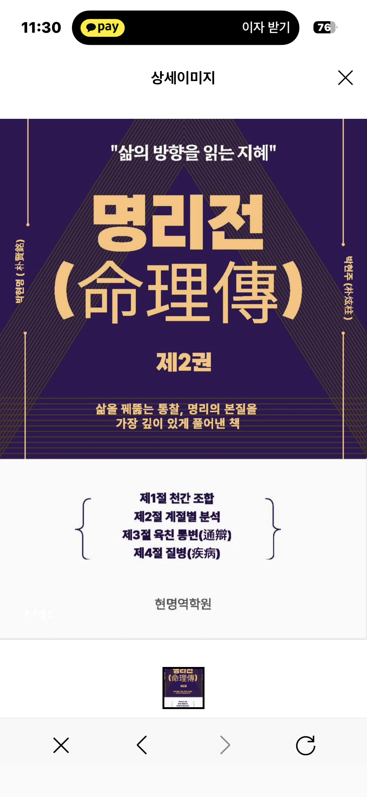
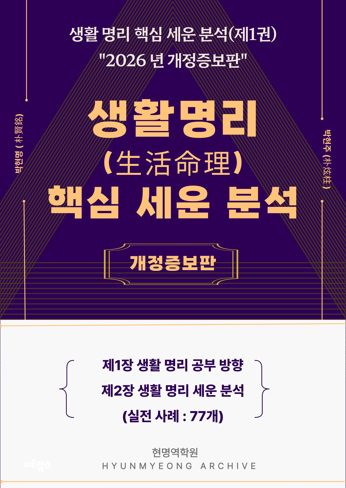

VIMEO LECTURE
천간론
십천간의 성정과 작용을 이해하고 원국 해석의 기본 언어를 정리합니다.
- 갑을병정무기경신임계의 기본 성정
- 천간의 생극과 조합
- 실제 원국에서 천간을 읽는 기준
Vimeo 링크 등록 대기
각 강의의 Vimeo 영상 ID를 등록하면 이 영역에서 바로 재생됩니다.
LECTURES
현명역학원의 Vimeo 동영상 강의 과정입니다. 천간과 지지의 기본부터 원국 분석, 세운 풀이, 작명, 창업 상담까지 단계적으로 학습합니다.
VIMEO LECTURE
십천간의 성정과 작용을 이해하고 원국 해석의 기본 언어를 정리합니다.
CURRICULUM
단순 암기보다 원리를 이해하고, 실제 사례에 적용할 수 있는 순서로 학습합니다.
DIRECTOR
현명역학원은 기존의 단순한 사주풀이 방식에서 벗어나 현명원장님만의 독창적인 상생상극 이론을 바탕으로 세운과 월운의 흐름을 중심으로 분석하는 실전 명리학 전문 채널입니다.
수원 월신철학관의 대를 이어 40년 이상 명리학을 연구하고 상담해 온 현명원장님은 수많은 제자를 배출하며 명리학 교육과 연구에 힘써왔습니다.
사주를 넘어 삶의 방향을 찾고, 운의 흐름을 읽어 미래를 준비하는 공간. 현명역학원 TV와 함께 명리를 배우고 운명을 설계하십시오.

PUBLICATIONS
현명역학원의 강의와 함께 공부할 수 있는 출간 도서입니다. 도서 주문은 상담 문의 연락처 또는 계좌 입금 확인 후 안내됩니다.

기초 명리 개념과 사주 원국 해석의 기본기를 정리한 교재
60,000원
실전 통변과 운의 흐름을 더 깊게 다루는 심화 교재
60,000원
일상 상담에 바로 활용할 수 있는 세운 분석 핵심 정리
29,000원사주 원국과 오행의 균형을 살펴 이름의 기운과 방향을 정성스럽게 검토합니다.
NAMING APPLICATION
현명 원장님이 사주명리 원리를 바탕으로 이름의 방향과 오행 균형을 검토합니다. 아래 내용을 작성한 뒤 문자 또는 전화로 접수해 주세요.
LIFE CONSULT
생년월일시와 고민을 바탕으로 만세력을 세우고, 현명역학원의 통변 문체로 흐름과 선택의 방향을 정리해 드립니다.